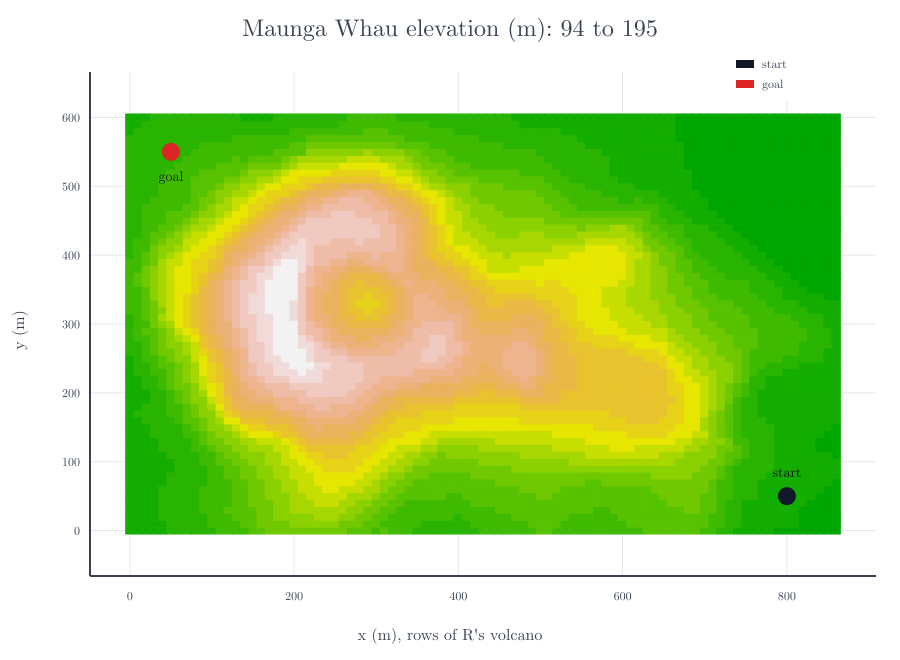
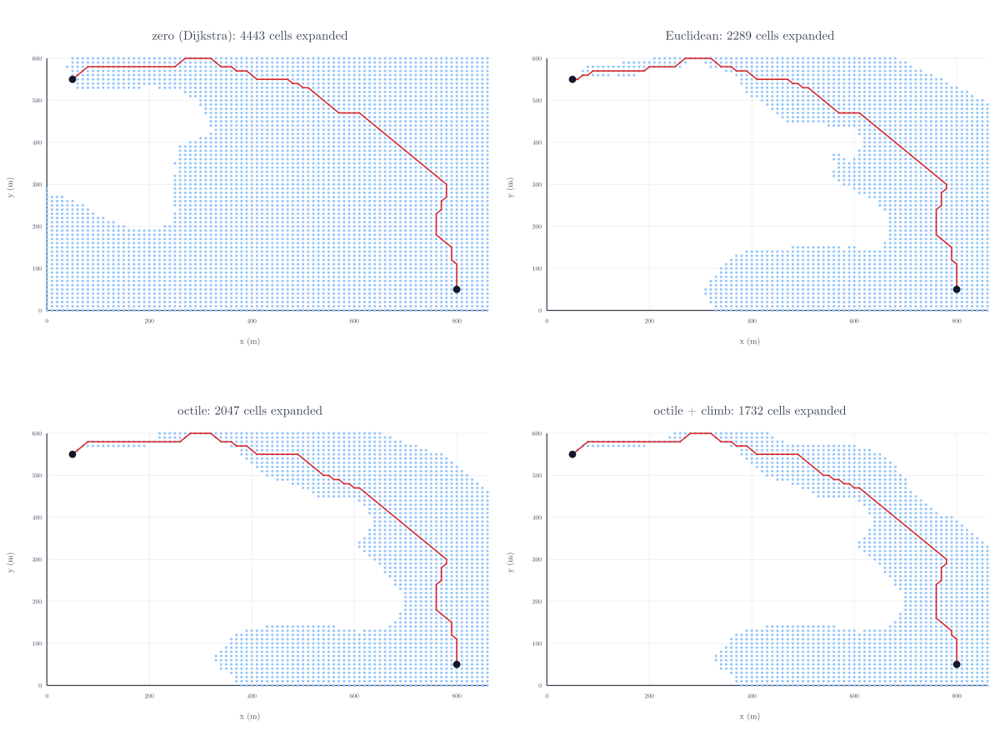
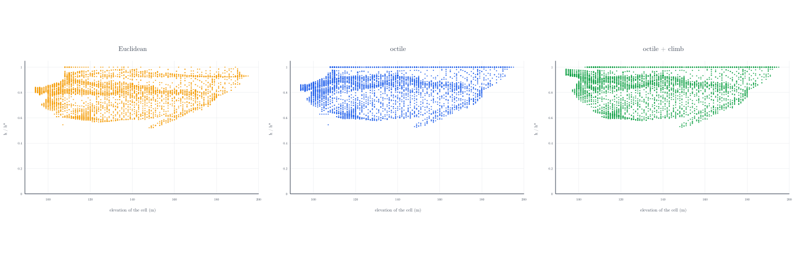
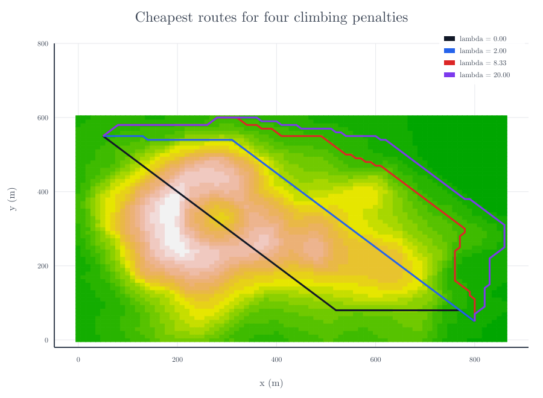
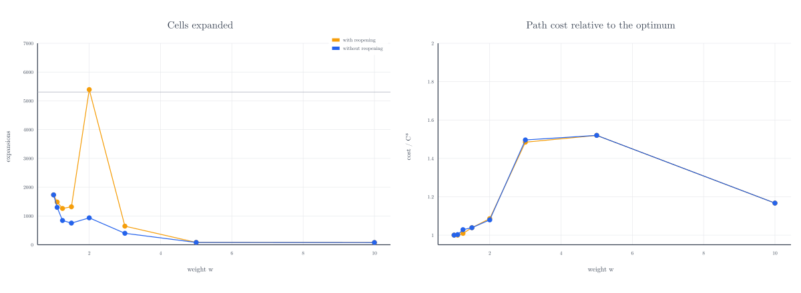

A* Search: Walking Over a Volcano
Abstract
A* finds a cheapest path by expanding nodes in order of \(f=g+h\): the cost
\(g\) of reaching a node plus a heuristic estimate \(h\) of the cost still to
come. We prove that an admissible \(h\), one that never overestimates, makes
the first path to reach the goal optimal. We also show that A* must expand every
node with \(g^*+h<C^*\) and never one with \(g^*+h>C^*\), so a larger admissible
heuristic can only save work. The test problem is a walk across Maunga Whau (Mt
Eden), using R's volcano elevation grid, now dm::datasets::volcano(). Each
step costs its length plus 8.3 metres for every metre climbed, which is
Naismith's rule for hill walking. The cheapest route from the south-east foot to
the north-west foot avoids the summit and climbs only 17 m. We derive three
admissible heuristics from the cost model. Dijkstra's algorithm (\(h=0\))
expands 4,443 of the 5,307 cells and the best heuristic 1,732, and every count
lies within the bounds the theory predicts. Weighted A* with \(f=g+wh\) expands
fewer cells still, and its path never costs more than \(w\) times the optimum.
The algorithm and why it is optimal
Let a graph have non-negative step costs \(c(u,v)\), a start \(s\) and a goal \(t\). Write \(g^*(v)\) for the cost of the cheapest path from \(s\) to \(v\), \(h^*(v)\) for the cheapest cost from \(v\) to \(t\), and \(C^*=g^*(t)\) for the optimum. A* keeps a priority queue of open nodes. For each it stores the best known cost \(g(v)\) and the priority \(f(v)=g(v)+h(v)\). It repeatedly removes the open node with the smallest \(f\), stops if that node is the goal, and otherwise relaxes its neighbours: if \(g(u)+c(u,v)<g(v)\), it records the cheaper route and puts \(v\) back on the queue.
g[s] = 0; open = {s}
loop:
u = open node with the smallest g[u] + h(u)
if u == t: return the path to u via the parent pointers
for each neighbour v of u:
if g[u] + c(u,v) < g[v]: g[v] = g[u] + c(u,v); parent[v] = u; open.push(v)With \(h=0\) this is Dijkstra's algorithm, which expands nodes in order of distance from the start, in every direction. The heuristic tilts the search toward the goal.
Admissible heuristics give optimal paths
Call \(h\) admissible if \(h(v)\le h^*(v)\) for every \(v\), and \(h(t)=0\). Suppose A* is about to return the goal with cost \(g(t)>C^*\). Take an optimal path \(s=v_0,v_1,\dots,v_k=t\). Its start is closed and its end is not yet expanded, so it has a first node \(v_i\) still open. All its predecessors on the path were expanded with their optimal costs, so \(g(v_i)=g^*(v_i)\). Then
so A* would remove \(v_i\) before \(t\), a contradiction. Hence the returned path is optimal. The argument only needs \(h\) to never overestimate on optimal paths.
Consistent heuristics, and which nodes get expanded
Call \(h\) consistent if \(h(u)\le c(u,v)+h(v)\) for every step: the estimate cannot drop by more than the step costs. With \(h(t)=0\), summing this along any path shows consistency implies admissibility. It also makes \(f\) non-decreasing along every path, because \(f(v)=g(u)+c(u,v)+h(v)\ge g(u)+h(u)=f(u)\). So A* removes nodes in non-decreasing order of \(f\), each node's first removal already has \(g=g^*\), and no node is ever expanded twice. Two consequences pin down the work exactly:
A node with \(f^*<C^*\) must come out of the queue before the goal, and one with \(f^*>C^*\) never does. Only ties at exactly \(C^*\) depend on the tie-breaking rule. So if \(h_1\le h_2\) are both consistent, every node that \(h_2\) must expand is also expanded by \(h_1\): the larger heuristic dominates. The ideal is \(h=h^*\), which expands only nodes on optimal paths.
Weighted A*: trading optimality for speed
Using \(f=g+w\,h\) with \(w>1\) pushes the search harder toward the goal. The argument above still bounds the result. When the goal is removed with cost \(g(t)\), the first open node \(v_i\) on an optimal path satisfies
so weighted A* returns a path at most \(w\) times as costly as the best, often after far fewer expansions.
The terrain
dm::datasets::volcano() is R's volcano: heights of Maunga Whau, a volcanic
cone in Auckland, on an \(87\times61\) grid with 10 m spacing.
dm::algorithms::terrain_from_frame() turns the long-format table into a
TerrainGrid. Each cell is a node with up to 8 neighbours. The walker starts
near the south-east foot and must reach the north-west foot, on opposite sides
of the cone.
#include <dm/dm.hpp>
namespace alg = dm::algorithms;
int main() {
std::filesystem::create_directories("build");
const auto volcano = dm::datasets::volcano();
std::print("{}\n\n",
volcano |
dm::summarise(dm::agg::n("cells"),
dm::agg::min("elevation", "lowest (m)"),
dm::agg::median("elevation", "median (m)"),
dm::agg::max("elevation", "highest (m)"),
dm::agg::max("x", "x extent (m)"),
dm::agg::max("y", "y extent (m)")) | dm::to_md(0));
const auto grid = alg::terrain_from_frame(volcano, "x", "y", "elevation");
const std::size_t start = 80 * grid.cols + 5, goal = 5 * grid.cols + 55;
auto xy = [&](std::size_t cell) {
return std::pair{grid.cell_size * (cell / grid.cols),
grid.cell_size * (cell % grid.cols)};
};
std::vector<double> xs, ys;
for (std::size_t i = 0; i < grid.rows; ++i)
xs.push_back(grid.cell_size * i);
for (std::size_t j = 0; j < grid.cols; ++j)
ys.push_back(grid.cell_size * j);
std::vector<std::vector<double>> z(grid.rows, std::vector<double>(grid.cols));
for (std::size_t c = 0; c < grid.elevation.size(); ++c)
z[c / grid.cols][c % grid.cols] = grid.elevation[c];
const auto[sx, sy] = xy(start);
const auto[gx, gy] = xy(goal);
std::print("Grid {} x {} cells of {} m. Start ({}, {}) at {} m, goal ({}, {}) at {} m. " "Straight-line distance {:.0f} m.\n",
grid.rows, grid.cols, grid.cell_size, sx, sy,
grid.elevation[start], gx, gy, grid.elevation[goal],
std::hypot(gx - sx, gy - sy));
dm::graphics::RPlot::create().image(xs, ys, z,
dm::graphics::terrain_colors(20)).points({sx}, {sy}, "start", dm::RGB{17, 24, 39}, 9.0).points({gx}, {gy}, "goal", dm::RGB{220, 38, 38}, 9.0).text(sx, sy + 35, "start").text(gx, gy - 35, "goal").title("Maunga Whau elevation (m): 94 to 195").x_label("x (m), rows of R's volcano").y_label("y (m)").size(900, 660).save_svg("build/a_star_terrain.svg");
}| cells | lowest (m) | median (m) | highest (m) | x extent (m) | y extent (m) |
|---|---|---|---|---|---|
| 5307 | 94 | 124 | 195 | 860 | 600 |
Grid 87 x 61 cells of 10 m. Start (800, 50) at 102 m, goal (50, 550) at 108 m. Straight-line distance 901 m.

The cone rises from about 100 m to 195 m, with the summit just west of a crater whose floor sits about 40 m lower. A lower ridge runs east from the cone. Start and goal are both on low ground, 102 m and 108 m, 901 m apart in a straight line, and the straight line passes over the summit.
A cost model for walking, and heuristics derived from it
Walking uphill is slow. Naismith's rule for hill walking allows one hour per 5 km of distance plus one hour per 600 m of ascent, so one metre of climb is worth \(5000/600\approx8.33\) metres on the flat. A step from cell \(u\) to a neighbour \(v\) therefore costs
where \(\ell\) is 10 m for a straight step and \(10\sqrt2\) m for a diagonal one, and descending is free. The cost of a path is its length plus \(\lambda\) times its total ascent. Each heuristic below is a lower bound on that, so each is admissible, and each is consistent.
- *Zero*, \(h=0\): Dijkstra's algorithm.
- *Euclidean*, the straight-line horizontal distance \(\sqrt{\Delta x^2+\Delta y^2}\): no path is shorter than a straight line, and climbing only adds cost. It is consistent by the triangle inequality.
- *Octile*: on an 8-connected grid the shortest route between two cells \(\Delta_1\) and \(\Delta_2\) cells apart along the axes takes \(\min(\Delta_1,\Delta_2)\) diagonal steps and \(|\Delta_1-\Delta_2|\) straight ones, so its length is \(10\bigl(\max+(\sqrt2-1)\min\bigr)\). This is the exact cost on flat ground, at least the Euclidean distance, and still a lower bound.
- *Octile plus climb*: any path from \(v\) to the goal must gain at least \(\max(0,z_t-z_v)\) metres in net height, and its ascent is at least its net gain. Adding \(\lambda\max(0,z_t-z_v)\) keeps the bound admissible. It stays consistent because \(\max(0,z_t-z_u)\le\max(0,z_v-z_u)+\max(0,z_t-z_v)\).
All four satisfy \(0\le h_{\text{Euclid}}\le h_{\text{octile}}\le h_{\text{octile+climb}}\le h^*\), so by dominance each should expand no more cells than the one before.
Four searches for the same path
dm::algorithms::terrain_a_star() runs A* on the grid and records every cell in
the order it was expanded. We run it with each heuristic and check the expanded
sets against the theory. terrain_cost_from() and terrain_cost_to_go() give
the exact \(g^*\) and \(h^*\) of every cell (two runs of Dijkstra), so we can
count the cells with \(g^*+h<C^*\) and with \(g^*+h\le C^*\).
#include <dm/dm.hpp>
namespace alg = dm::algorithms;
int main() {
std::filesystem::create_directories("build");
const auto grid =
alg::terrain_from_frame(dm::datasets::volcano(), "x", "y", "elevation",
5000.0 / 600.0);
const std::size_t start = 80 * grid.cols + 5, goal = 5 * grid.cols + 55;
const auto from_start = alg::terrain_cost_from(grid, start);
const auto to_goal = alg::terrain_cost_to_go(grid, goal);
const double optimum = from_start[goal];
const std::vector<std::pair<std::string, alg::TerrainHeuristic>> heuristics = {{"zero (Dijkstra)", alg::TerrainHeuristic::Zero}, {"Euclidean", alg::TerrainHeuristic::Euclidean}, {"octile", alg::TerrainHeuristic::Octile}, {"octile + climb", alg::TerrainHeuristic::OctileClimb}};
std::print("| heuristic | \\(h(s)\\) | \\(h(s)/C^*\\) | path cost | expanded | " "cells with \\(g^*+h<C^*\\) | cells with \\(g^*+h\\le C^*\\) | queue pushes | time (ms) |\n" "| --- | ---: | ---: | ---: | ---: | ---: | ---: | ---: | ---: |\n");
auto layout = dm::graphics::RLayout::create(2, 2);
for (const auto & [name, kind] : heuristics) {
const auto t0 = std::chrono::steady_clock::now();
const auto path = alg::terrain_a_star(grid, start, goal, kind);
const auto t1 = std::chrono::steady_clock::now();
std::size_t below = 0, at_most = 0;
for (std::size_t c = 0; c < grid.elevation.size(); ++c) {
const double f =
from_start[c] + alg::terrain_heuristic(grid, c, goal, kind);
below += f < optimum - 1e-9;
at_most += f <= optimum + 1e-9;
}
const double h0 = alg::terrain_heuristic(grid, start, goal, kind);
std::print("| {} | {:.0f} | {:.2f} | {:.1f} | {} | {} | {} | {} | {:.1f} |\n",
name, h0, h0 / optimum, path.cost,
path.expansion_order.size(), below, at_most, path.pushes,
std::chrono::duration<double, std::milli>(t1 - t0).count());
std::vector<double> ex, ey, px, py;
for (std::size_t c : path.expansion_order) {
ex.push_back(grid.cell_size * (c / grid.cols));
ey.push_back(grid.cell_size * (c % grid.cols));
}
for (std::size_t c : path.path) {
px.push_back(grid.cell_size * (c / grid.cols));
py.push_back(grid.cell_size * (c % grid.cols));
}
layout.add(dm::graphics::RPlot::create().points(ex, ey, "",
dm::RGB{147, 197, 253},
2.5).lines(
px, py, "", dm::RGB{220, 38, 38}, 2.5).points(
{px.front()}, {py.front()}, "", dm::RGB{17, 24, 39}, 7.0).points({px.back()}, {py.back()}, "", dm::RGB{17, 24, 39}, 7.0).x_limits(0, 860).y_limits(0, 600).title(std::format("{}: {} cells expanded", name, path.expansion_order.size())).x_label("x (m)").y_label("y (m)"));
}
std::print("\nOptimal cost C* = {:.1f}; cells in the grid: {}.\n", optimum,
grid.elevation.size());
layout.size(1200, 900).save_svg("build/a_star_expansions.svg");
}| heuristic | \(h(s)\) | \(h(s)/C^*\) | path cost | expanded | cells with \(g^*+h<C^*\) | cells with \(g^*+h\le C^*\) | queue pushes | time (ms) |
|---|---|---|---|---|---|---|---|---|
| zero (Dijkstra) | 0 | 0.00 | 1291.5 | 4443 | 4442 | 4443 | 6448 | 2.5 |
| Euclidean | 901 | 0.70 | 1291.5 | 2289 | 2285 | 2293 | 3969 | 1.5 |
| octile | 957 | 0.74 | 1291.5 | 2047 | 1990 | 2061 | 3903 | 1.4 |
| octile + climb | 1007 | 0.78 | 1291.5 | 1732 | 1676 | 1746 | 3571 | 1.3 |
Optimal cost C* = 1291.5; cells in the grid: 5307.

All four searches return the same cost, \(C^*=1291.5\), which is the cost Dijkstra's algorithm certifies as optimal. Each expanded count lies between the two bounds of the theorem. For Dijkstra, the 4,443 expanded cells are exactly the cells that are cheaper to reach from the start than the goal is. Only the high cone, which costs more to reach than the whole trip, is left out. Each stronger heuristic expands fewer cells, as dominance predicts: 2,289 for the straight-line distance, 2,047 for the octile distance, and 1,732 for octile plus climb, 39% of Dijkstra's work. The searches take well under a millisecond either way. On a grid this small the heap operations are cheap, and the saving matters for larger maps or costlier expansions.
Even the best heuristic expands a third of the grid, although the path has only 99 cells. The heuristic sees only 78% of the true cost from the start. The 22% it misses is the detour around the cone, which no local bound can anticipate. Every cell whose \(g^*+h\) falls below \(C^*\) must be expanded, and with a gap that large many cells do.
Building this example exposed a subtle issue. In the first run, octile plus
climb expanded 1,757 entries, more than the 1,746 cells the theorem allows. The
heuristic is consistent, but 25 cells had been expanded twice. On a grid, many
routes have the same real cost, for example a straight step then a diagonal one,
or the reverse, but their floating-point sums can differ in the last bit. The
search treated that difference as a cheaper route and reopened closed cells.
terrain_a_star() now ignores improvements smaller than a relative
\(10^{-12}\), and a test checks that no cell is expanded twice.
How tight are the heuristics?
The ratio \(h/h^*\) measures how much of the true remaining cost a heuristic sees. The figure plots it for every cell against the cell's elevation.
#include <dm/dm.hpp>
namespace alg = dm::algorithms;
int main() {
std::filesystem::create_directories("build");
const auto grid =
alg::terrain_from_frame(dm::datasets::volcano(), "x", "y", "elevation",
5000.0 / 600.0);
const std::size_t goal = 5 * grid.cols + 55;
const auto to_goal = alg::terrain_cost_to_go(grid, goal);
std::print("| heuristic | mean \\(h/h^*\\) | median | 10th percentile | max | cells with \\(h=h^*\\) |\n" "| --- | ---: | ---: | ---: | ---: | ---: |\n");
const std::vector<std::pair<std::string, alg::TerrainHeuristic>> heuristics = {{"Euclidean", alg::TerrainHeuristic::Euclidean}, {"octile", alg::TerrainHeuristic::Octile}, {"octile + climb", alg::TerrainHeuristic::OctileClimb}};
const std::vector<dm::RGB> colours = {{245, 158, 11}, {37, 99, 235},
{22, 163, 74}};
auto layout = dm::graphics::RLayout::create(1, 3);
for (std::size_t k = 0; k < heuristics.size(); ++k) {
std::vector<double> ratio, elevation;
std::size_t exact = 0;
for (std::size_t c = 0; c < grid.elevation.size(); ++c) {
if (c == goal) continue;
const double h =
alg::terrain_heuristic(grid, c, goal, heuristics[k].second);
ratio.push_back(h / to_goal[c]);
elevation.push_back(grid.elevation[c]);
exact += std::abs(h - to_goal[c]) < 1e-9;
}
auto sorted = ratio;
std::ranges::sort(sorted);
double mean = 0.0;
for (double r : ratio) mean += r / ratio.size();
std::print("| {} | {:.3f} | {:.3f} | {:.3f} | {:.3f} | {} |\n",
heuristics[k].first, mean, sorted[sorted.size() / 2],
sorted[sorted.size() / 10], sorted.back(), exact);
layout.add(dm::graphics::RPlot::create().points(elevation, ratio, "",
colours[k], 2.0).y_limits(0, 1.05).title(heuristics[k].first).x_label("elevation of the cell (m)").y_label("h / h*"));
}
layout.size(1350, 440).save_svg("build/a_star_tightness.svg");
}| heuristic | mean \(h/h^*\) | median | 10th percentile | max | cells with \(h=h^*\) |
|---|---|---|---|---|---|
| Euclidean | 0.798 | 0.808 | 0.629 | 1.000 | 50 |
| octile | 0.840 | 0.854 | 0.652 | 1.000 | 750 |
| octile + climb | 0.858 | 0.881 | 0.654 | 1.000 | 827 |

The heuristics see between half and all of the remaining cost. On average the straight-line distance captures 80%, the octile distance 84% and octile plus climb 86%. They agree exactly with \(h^*\) for 50, 750 and 827 cells respectively: cells from which the cheapest route has the shortest possible length and no climbing beyond what the heuristic counts. The worst ratios, near 0.52, are in the crater at about 150 m. A walker there must first climb out over the rim, and no heuristic built from distance and net height can see that. The climb term helps most on low ground below the goal's 108 m, where it adds the unavoidable ascent.
How much should climbing cost?
The route depends on \(\lambda\). With \(\lambda=0\) only distance matters and the walker goes over the top. As \(\lambda\) grows, longer routes that avoid climbing become cheaper. We replan with several values of \(\lambda\) and compare the routes.
#include <dm/dm.hpp>
namespace alg = dm::algorithms;
int main() {
std::filesystem::create_directories("build");
const auto volcano = dm::datasets::volcano();
const std::vector<double> lambdas = {0.0, 2.0, 5000.0 / 600.0, 20.0};
const std::vector<dm::RGB> colours = {{17, 24, 39}, {37, 99, 235},
{220, 38, 38}, {124, 58, 237}};
auto base = alg::terrain_from_frame(volcano, "x", "y", "elevation");
const std::size_t start = 80 * base.cols + 5, goal = 5 * base.cols + 55;
std::vector<double> xs, ys;
for (std::size_t i = 0; i < base.rows; ++i)
xs.push_back(base.cell_size * i);
for (std::size_t j = 0; j < base.cols; ++j)
ys.push_back(base.cell_size * j);
std::vector<std::vector<double>> z(base.rows, std::vector<double>(base.cols));
for (std::size_t c = 0; c < base.elevation.size(); ++c)
z[c / base.cols][c % base.cols] = base.elevation[c];
auto plot =
dm::graphics::RPlot::create().image(xs, ys, z,
dm::graphics::terrain_colors(20));
std::print("| \\(\\lambda\\) | length (m) | ascent (m) | descent (m) | highest point (m) | cost | " "Naismith time (min) | expanded |\n| ---: | ---: | ---: | ---: | ---: | ---: | ---: | ---: |\n");
std::vector<std::string> names;
for (std::size_t k = 0; k < lambdas.size(); ++k) {
auto grid = base;
grid.climb_cost = lambdas[k];
const auto path =
alg::terrain_a_star(grid, start, goal,
alg::TerrainHeuristic::OctileClimb);
double top = 0.0;
std::vector<double> px, py;
for (std::size_t c : path.path) {
top = std::max(top, grid.elevation[c]);
px.push_back(grid.cell_size * (c / grid.cols));
py.push_back(grid.cell_size * (c % grid.cols));
}
const double minutes =
60.0 * (path.length / 5000.0 + path.ascent / 600.0);
std::print("| {:.2f} | {:.0f} | {:.0f} | {:.0f} | {:.0f} | {:.0f} | {:.1f} | {} |\n",
lambdas[k], path.length, path.ascent, path.descent, top,
path.cost, minutes, path.expansion_order.size());
plot.lines(px, py, "", colours[k], 3.0);
names.push_back(std::format("lambda = {:.2f}", lambdas[k]));
}
plot.legend(names, colours).y_limits(-20, 800).title(
"Cheapest routes for four climbing penalties").x_label("x (m)").y_label(
"y (m)").size(900, 660).save_svg("build/a_star_climb.svg");
}| \(\lambda\) | length (m) | ascent (m) | descent (m) | highest point (m) | cost | Naismith time (min) | expanded |
|---|---|---|---|---|---|---|---|
| 0.00 | 957 | 121 | 115 | 189 | 957 | 23.6 | 226 |
| 2.00 | 957 | 64 | 58 | 150 | 1085 | 17.9 | 1612 |
| 8.33 | 1150 | 17 | 11 | 117 | 1291 | 15.5 | 1732 |
| 20.00 | 1236 | 11 | 5 | 110 | 1456 | 15.9 | 1442 |

With no penalty for climbing (\(\lambda=0\)) the route is as short as the grid allows, 957 m, and crosses the cone's shoulder at 189 m, with 121 m of ascent. Many routes share that length on an 8-connected grid, and A* returns one of them. With \(\lambda=2\) it picks another route of the same length that crosses the lower eastern ridge instead, halving the ascent to 64 m. With Naismith's \(\lambda=8.33\) the walker gives up 193 m of extra distance to avoid all but 17 m of climbing, and goes round the north of the cone at no more than 117 m. With \(\lambda=20\) it swings further out still, to save 6 more metres of climb.
The Naismith time, an hour per 5 km plus an hour per 600 m of ascent, is exactly the cost at \(\lambda=8.33\) converted to minutes, so that route is the fastest of the four: 15.5 minutes, against 23.6 for the shortest route over the top.
Weighted A*
Finally we trade optimality for speed with \(f=g+w\,h\), using the octile-plus-climb heuristic and Naismith's \(\lambda\).
#include <dm/dm.hpp>
namespace alg = dm::algorithms;
int main() {
std::filesystem::create_directories("build");
const auto grid =
alg::terrain_from_frame(dm::datasets::volcano(), "x", "y", "elevation",
5000.0 / 600.0);
const std::size_t start = 80 * grid.cols + 5, goal = 5 * grid.cols + 55;
const auto best =
alg::terrain_a_star(grid, start, goal,
alg::TerrainHeuristic::OctileClimb);
std::print("| \\(w\\) | expanded (reopening) | cost / \\(C^*\\) (reopening) | expanded (no reopening) | " "cost / \\(C^*\\) (no reopening) | length (m) | ascent (m) |\n" "| ---: | ---: | ---: | ---: | ---: | ---: | ---: |\n");
std::vector<double> ws, expanded_reopen, expanded_closed, ratio_reopen, ratio_closed;
for (double w : {1.0, 1.1, 1.25, 1.5, 2.0, 3.0, 5.0, 10.0}) {
const auto again =
alg::terrain_a_star(grid, start, goal,
alg::TerrainHeuristic::OctileClimb, w, true);
const auto once =
alg::terrain_a_star(grid, start, goal,
alg::TerrainHeuristic::OctileClimb, w, false);
std::print("| {} | {} | {:.3f} | {} | {:.3f} | {:.0f} | {:.0f} |\n", w,
again.expansion_order.size(), again.cost / best.cost,
once.expansion_order.size(), once.cost / best.cost,
once.length, once.ascent);
ws.push_back(w);
expanded_reopen.push_back(static_cast<double>(again.expansion_order.size()));
expanded_closed.push_back(static_cast<double>(once.expansion_order.size()));
ratio_reopen.push_back(again.cost / best.cost);
ratio_closed.push_back(once.cost / best.cost);
}
const dm::RGB blue{37, 99, 235}, orange{245, 158, 11};
auto layout = dm::graphics::RLayout::create(1, 2);
layout.add(dm::graphics::RPlot::create().lines(ws, expanded_reopen, "",
orange, 2.0).points(
ws, expanded_reopen, "", orange, 6.0).lines(ws, expanded_closed,
"", blue, 2.0).points(ws, expanded_closed, "", blue, 6.0).abline_h(static_cast<double>(grid.elevation.size()), dm::RGB{156, 163, 175}, 1.0).legend({"with reopening", "without reopening"}, {orange, blue}).y_limits(0, 7000).title("Cells expanded").x_label("weight w").y_label("expansions"));
layout.add(dm::graphics::RPlot::create().lines(ws, ratio_reopen, "", orange,
2.0).points(ws, ratio_reopen,
"", orange, 6.0).lines(ws, ratio_closed, "", blue, 2.0).points(ws, ratio_closed, "", blue, 6.0).y_limits(0.95, 2.0).title("Path cost relative to the optimum").x_label("weight w").y_label("cost / C*"));
layout.size(1200, 440).save_svg("build/a_star_weighted.svg");
}| \(w\) | expanded (reopening) | cost / \(C^*\) (reopening) | expanded (no reopening) | cost / \(C^*\) (no reopening) | length (m) | ascent (m) |
|---|---|---|---|---|---|---|
| 1 | 1732 | 1.000 | 1732 | 1.000 | 1150 | 17 |
| 1.1 | 1483 | 1.000 | 1298 | 1.003 | 1153 | 17 |
| 1.25 | 1260 | 1.009 | 842 | 1.029 | 1145 | 22 |
| 1.5 | 1318 | 1.039 | 752 | 1.039 | 1133 | 25 |
| 2 | 5391 | 1.086 | 934 | 1.079 | 1119 | 33 |
| 3 | 645 | 1.484 | 397 | 1.496 | 1024 | 109 |
| 5 | 79 | 1.520 | 79 | 1.520 | 963 | 120 |
| 10 | 76 | 1.167 | 76 | 1.167 | 957 | 66 |

A small weight buys a lot. With \(w=1.25\) and no reopening, A* expands 842 cells, less than half of the 1,732 for plain A*, and returns a path 2.9% more expensive than the optimum. At \(w=1.5\) it expands 752 cells for a path 3.9% dearer. Every path stays far inside the guarantee: the worst ratio is 1.52, at \(w=5\). Large weights make the search almost greedy. With \(w\ge5\) it expands under 80 cells and heads straight for the goal over the top. That costs about 50% more at \(w=5\), while \(w=10\) happens to find a better compromise route, 17% over. Neither expansions nor cost need change monotonically with \(w\).
Reopening makes things worse here. \(w\,h\) is not consistent, so cheaper routes to closed cells keep turning up. With reopening, \(w=2\) expands 5,391 entries, more than the grid has cells, for a path no better than the one found without reopening. The bound \(\text{cost}\le w\,C^*\) also holds without reopening (Likhachev, Gordon and Thrun, 2003), so not reopening is the usual choice for weighted A*.
Summary
- A* with an admissible heuristic returns an optimal path. With a consistent heuristic it expands every cell with \(g^*+h<C^*\) and none with \(g^*+h>C^*\). On the volcano all four heuristics found the optimum, \(C^*=1291.5\), and their expanded counts fell inside these bounds.
- Heuristics derived from the cost model are larger and so save more work. Octile distance plus the unavoidable climb expanded 1,732 cells, against 4,443 for Dijkstra and 2,289 for the straight-line distance.
- The cost model decides the route. With Naismith's rule the cheapest crossing goes round the cone: 1,150 m with 17 m of climbing, against 957 m with 121 m over the top, and it is the fastest walk.
- Weighted A* with \(w=1.25\) to \(1.5\) halves the work for paths within 4% of optimal, well inside the guarantee \(w\,C^*\). Without reopening it is both faster and no worse.
- Floating-point ties can break the textbook guarantee that a consistent heuristic never reopens a node. Improvements must exceed a small tolerance.
Complexity and relatives
With a binary heap, A* costs \(O((V+E)\log V)\) in the worst case, the same as
Dijkstra, and \(O(V)\) memory for the costs and parent pointers. The heuristic
decides how much of that worst case is paid. Memory, not time, is usually the
limit on large graphs, which motivates iterative-deepening A* (IDA*), which
uses linear memory by repeating depth-first searches with an increasing \(f\)
bound. Jump point search prunes symmetric paths on uniform-cost grids.
Contraction hierarchies and landmark (ALT) heuristics, which use the
triangle inequality with precomputed distances to a few landmarks, make
road-network routing fast. dm::algorithms::a_star_search() runs A* on any
graph given as an edge list with a per-vertex heuristic; terrain_edges() turns
a terrain grid into that form.